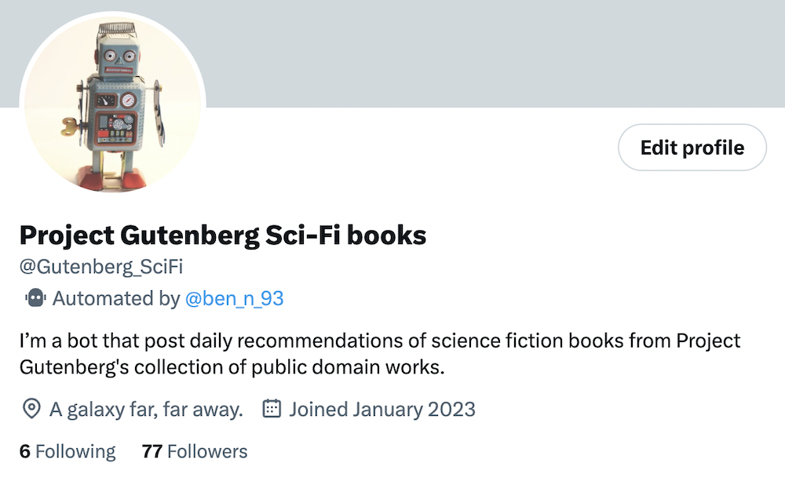
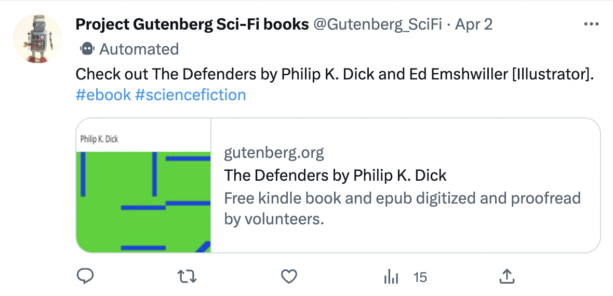
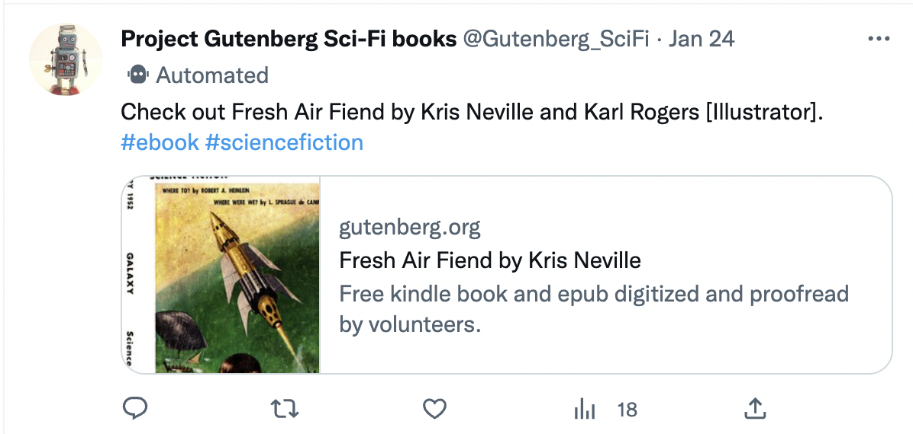

How I created a Twitter bot that posts about science fiction books
Posted on Fri 31 March 2023 in Blog
As an avid reader I thought it would be cool to combine my love of literature and data to create a Twitter bot that posts about sci-fi books:

Specifically I wanted to recommend science fiction books that you could read free of charge, something made possible thanks to Project Gutenberg, a volunteer-run organisation that hosts a collection of public domain works.
Data source/collection
PG very helpfully offers a CSV feed, which I used to download their catalog:
import csv
import requests
IDS_CSV = "data/IDs_log.csv"
SF_CATALOG = "data/sf_catalog.csv"
PG_CATALOG = "data/pg_catalog.csv"
# Access Project Guntenberg CSV feed and write catalog to CSV file.
URL = "https://www.gutenberg.org/cache/epub/feeds/pg_catalog.csv"
with open(PG_CATALOG, 'wb') as f:
content = requests.get(URL, stream=True)
for line in content.iter_lines():
f.write(line+'\n'.encode())
Here's a snippet of the catalog:
| Text# | Type | Issued | Title | Language | Authors | Subjects | LoCC | Bookshelves |
|---|---|---|---|---|---|---|---|---|
| 64 | Text | 1993-05-01 | The Gods of Mars | en | Burroughs, Edgar Rice, 1875-1950 | Science fiction; Mars (Planet) -- Fiction; Life on other planets -- Fiction; Carter, John (Fictitious character) -- Fiction; Dejah Thoris (Fictitious character) -- Fiction | PS | Science Fiction |
| 155 | Text | 2006-01-12 | The Moonstone | en | Collins, Wilkie, 1824-1889 | England -- Fiction; Country homes -- Fiction; Police -- England -- Fiction; Jewelry theft -- Fiction; East Indians -- England -- Fiction; Mystery fiction | PR | Detective Fiction; Mystery Fiction |
Data transformation
Filtering the data
Using the Subjects field, I identified science fiction books (and only books) and created a new CSV file of science fiction books:
# Create CSV file of science fiction books.
with open(PG_CATALOG) as input_file, open(SF_CATALOG, 'w') as output_file:
field_names = ['Text#', 'Title', 'Authors']
csv_reader = csv.DictReader(input_file)
csv_writer = csv.DictWriter(output_file, field_names)
csv_writer.writeheader()
for row in csv_reader:
if "Science Fiction" in row["Bookshelves"] and row["Type"] == "Text":
csv_writer.writerow({"Text#":row["Text#"], "Title":row["Title"], "Authors":row["Authors"]})
Cleaning the data
The Authors field metadata is in the "surname-first" format (used in academic and scientific writing), which is unfortunately not as readable for the intended end user of this bot:
For example:
| Text# | Title | Authors |
|---|---|---|
| 28767 | The Defenders | Dick, Philip K., 1928-1982; Emshwiller, Ed, 1925-1990 [Illustrator] |
In order to clean this data, I create a Book class and implemented a _clean_author_metadata() method:
"""Book class module."""
class Book:
"""A book from the Project Guntenberg collection."""
def __init__(self, text_ID, title, authors):
""" Constructor method."""
self.text_ID = str(text_ID)
self.title = title
self.URL = f"https://www.gutenberg.org/ebooks/{text_ID}"
self.authors = self._clean_authors_data(authors)
def _clean_authors_data(self, authors):
"""Clean the author metadata."""
individual_authors = authors.split(";")
cleaned_authors = []
for author in individual_authors:
author_words = author.split(" ")
new_author_words = []
for word in author_words:
try:
int(word[0])
except ValueError:
if word != "[Illustrator]":
new_word = word.replace(",", "")
new_author_words.insert(-1, new_word)
else:
new_author_words.append(word)
except IndexError:
pass
cleaned_author = " ".join(new_author_words)
cleaned_authors.append(cleaned_author)
return cleaned_authors
Using our The Defenders example from before, here is the cleaned data:

Choosing a book to post about
Before a random book is selected from the science fiction catalog to be posted to Twitter, there are a couple of checks that take place.
When a book is posted about by the Twitter bot, the book's unique ID (the Text# field that you can see in the catalog snippet above) is written to an "IDs" CSV - basically a log of which books have been posted about.
To begin with, we verify if the number of IDs recorded is equivalent to the number of science fiction books listed in the catalog. If this is the case, the bot has posted about all the SF books available and a fresh, empty IDs CSV file is created so that we can start posting again:
import os
import csv
import random
import tweepy
from book import Book
IDS_CSV = "data/IDs_log.csv"
SF_CATALOG = "data/sf_catalog.csv"
HEADERS = ["Text#", "Title"]
with open(SF_CATALOG) as sf_csv, open(IDS_CSV) as IDs_csv:
sf_csv_reader = csv.DictReader(sf_csv)
sf_rows = [row for row in sf_csv_reader]
sf_rows_count = len(sf_rows)
IDs_csv_reader = csv.DictReader(IDs_csv)
IDs_rows = [row for row in IDs_csv_reader]
IDs_rows_count = len(IDs_rows)
# Check to see if the Twitterbot has gone through all books in the SF catalog.
if sf_rows_count == IDs_rows_count:
with open(IDS_CSV, "w") as f:
csv_writer = csv.DictWriter(f, HEADERS)
csv_writer.writeheader()
csv_writer.writerow({"Text#":"0", "Title":"0"})
When a random book is selected from the SF catalog, we then check that this book hasn't been posted before. Note that there are two steps in this check:
-
There is a check to make sure the random book's Text# ID isn't present in our IDs catalog.
-
There is a check to ensure the book's title doesn't match anything that's been posted about before. That's because there are books that are present in the catalog more than once - for example, there are two version of The Strange Case of Dr. Jekyll and Mr. Hyde - so even if the Text# ID is different, it might be the same book. If the same book has posted before, it's Text# ID is written to the IDs catalog:
random_pick = sf_rows[random.randint(0, sf_rows_count)]
# Check to make sure the book chosen hasn't already been posted previously.
books_to_log = []
flag = False
while flag == False:
with open(IDS_CSV) as f:
csv_reader = csv.DictReader(f)
text_rows = [row['Text#'] for row in csv_reader]
title_rows = [row['Title'] for row in csv_reader]
if random_pick["Title"] in title_rows and random_pick["Text#"] not in text_rows:
same_book = Book(random_pick["Text#"], random_pick["Title"],random_pick["Authors"])
books_to_log.append(same_book)
if random_pick["Text#"] in text_rows:
random_pick = sf_rows[random.randint(0, sf_rows_count)]
continue
else:
flag = True
book_pick = Book(random_pick["Text#"], random_pick["Title"],random_pick["Authors"])
books_to_log.append(book_pick)
with open(IDS_CSV, 'a') as f:
csv_writer = csv.DictWriter(f, HEADERS)
for book in books_to_log:
csv_writer.writerow({"Text#":book.text_ID, "Title":book.title})
Once a random book has been selected that hasn't been posted about before, its Text# is logged to the IDs CSV and the book is posted to Twitter:
# Post to Twitter.
authors_string = " and ".join(book_pick.authors)
client.create_tweet(text=f"Check out {book_pick.title} by {authors_string}. #ebook #sciencefiction {book_pick.URL}")
Here's an example:

Automation
In order to make my Twitter bot automatically post a random book recommendation twice a day (at 7am and 7pm UTC time), I utilized Github Actions to create a customized workflow. This allowed me to automate the process of selecting and posting a book recommendation without the need for manual intervention:
name: Post book tweet
on:
schedule:
- cron: "0 7 * * *"
- cron: "0 19 * * *"
permissions: write-all
jobs:
build:
runs-on: ubuntu-latest
steps:
- name: Install Python
uses: actions/setup-python@v4
with:
python-version: '3.10'
- name: Checkout repository content
uses: actions/checkout@master
- name: Install requirements.txt
run: |
python -m pip install --upgrade pip
pip install -r requirements.txt
- name: Set enviromental secrets and execute twitter_bot.py
env:
PG_TWITTER_ACCESS_TOKEN: ${{ secrets.PG_TWITTER_ACCESS_TOKEN }}
PG_TWITTER_ACCESS_TOKEN_SECRET: ${{ secrets.PG_TWITTER_ACCESS_TOKEN_SECRET }}
PG_TWITTER_BEARER_TOKEN: ${{ secrets.PG_TWITTER_BEARER_TOKEN }}
PG_TWITTER_CONSUMER_KEY: ${{ secrets.PG_TWITTER_CONSUMER_KEY }}
PG_TWITTER_CONSUMER_SECRET: ${{ secrets.PG_TWITTER_CONSUMER_SECRET }}
run: |
python src/twitter_bot.py
- name: update repo
run: |
git config user.email ${{ secrets.EMAIL }}
git config user.name "Ben"
git config user.username ben-n93
git config user.password ${{ secrets.PERSONAL_ACCESS_TOKEN}}
git add --all
git commit -m "update"
git push
In order to ensure that my Twitter bot could post about any new sci-fi books added to the PG catalog, I also used GitHub Actions to automate the extraction of the catalog data on the first day of every month (I won't include the YAML file here but you can view it in my repo).
You can view the full source code on Github.